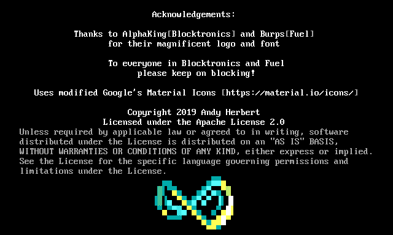

Moebius is a new ANSI and ASCII Editor for MacOS, Windows, and Linux. The major feature that differentiates it from PabloDraw is the 'half-block' brush which allows editing in a style closer to Photoshop than a text editor, although you can still use the function and cursor keys to draw with, and you should find that most of the text editing features from PD are carried over to this editor. The editor is still a work in progress, but anyone who wants to try using it is also encouraged to log feature requests and bugs on the project's GitHub page.
MacOS Application Windows Installer Windows Portable Executable Debian Package Source Code (GitHub) Bug Tracker and Feature Requests (GitHub)It also has a fantastic splash screen drawn by blocktronics own AlphaKing and Fuel's burps.
